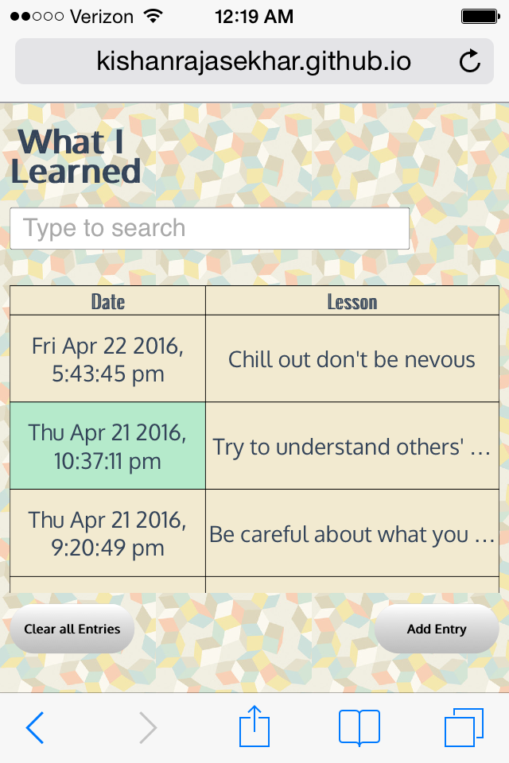
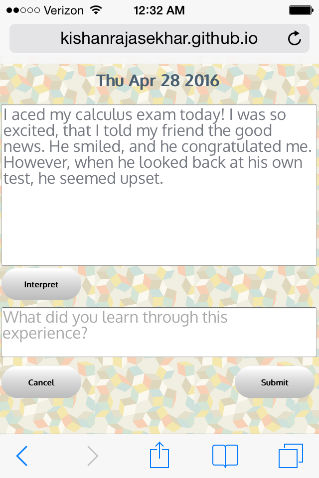
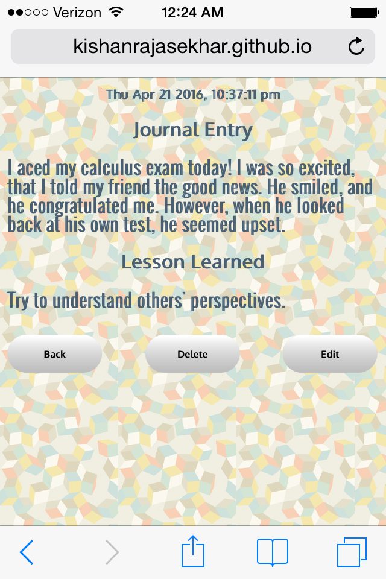
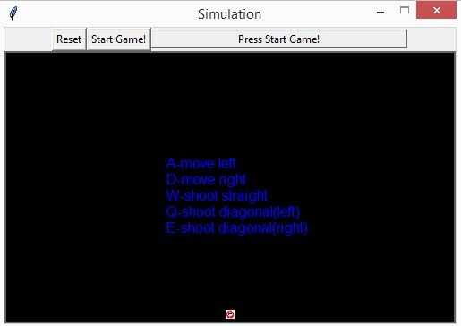
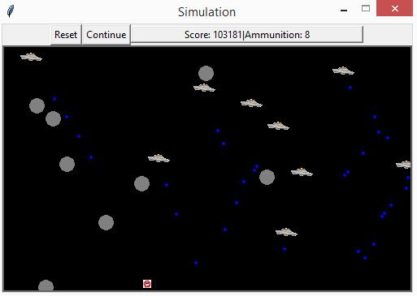
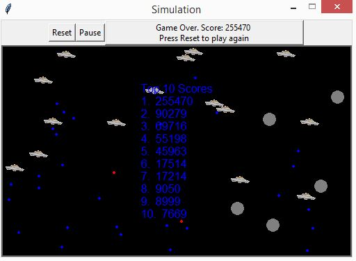
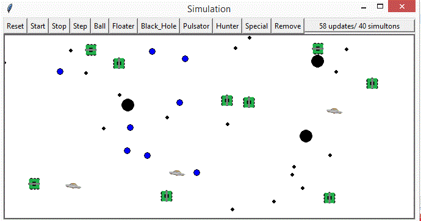
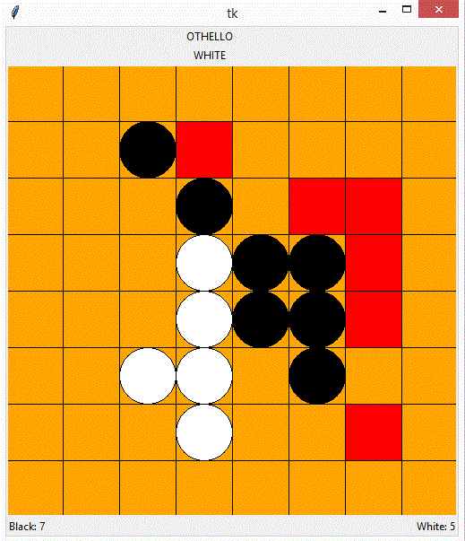
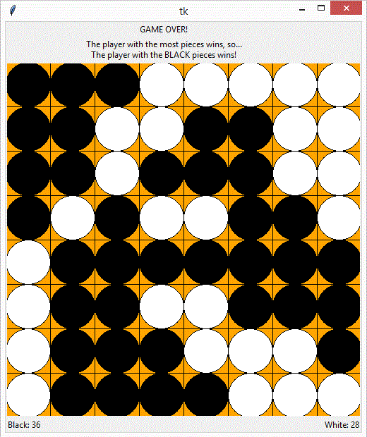
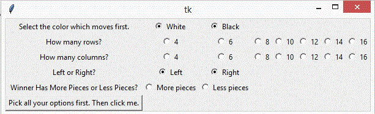

| Home | Projects | Experience | Activities | >
|---|
I made some fun projects in the courses I took at UCI, as well as some projects I made on my own. I posted them
on GitHub.
Click here to access my account:
What I Learned (April 2016)
My team and I participated in an app jam. The theme was autism, so we had to design an app to help autistic users. We decided to create a journaling app which helps its users learn from social situations. I was the back-end developer for this project. Click the link below to use the app.
http://kishanrajasekhar.github.io/AutismAppJam2016/
  UCI: Places To Go (January 2016)
Using the Google Maps API and some JavaScript, I made a simple web application in which the user clicks on a location they are interested in, an the map pans to that location. If the user presses "enter", the map shows the directions to that location from the UCI campus.
UFO-Ambush (June 2015)
This is a simple 2D shooting game that I made using Python. The code was originally used for an assignment for one of my classes to make an animated simulation. After I finished that assignment, I adapted the code to make my game.
  The original project that I adapted the code from was a simulation.
Ohtello (March 2015)
This was the final project for my ICS 32 class, and I built the program from scratch using python(the professor showed us similar examples during his lectures to help us). I first had to implement the game logic before I could start with the graphics. To do that, I used a 2D array to represent the board, with each element representing a piece or an empty space. I also had to check for invalid moves and prevent them from happening. Afterwards, I got to implement the graphics (I used tkinter), and the 2d array was used as a model to draw the game board.
  